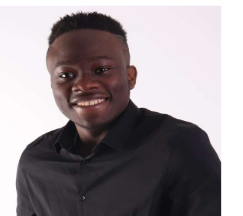

MEIN LEBENSLAUF:
Links zu meinem Bewerbungsschreiben: Hier
Links zu meinem Leistungsübersicht: Hier

Name: Donald Donchi Fofack
Staatangehörigkeit: Kamerun
Alter: 20 Jahre alt
Schulische und akademische Ausbildungen:
- Die Grundschule: 09/2003 - 06/2009
- Das Gymnasium: Abitur mit der Note 2.8 (09/2009-06/2016)
- Deutschkurse: C1 Zeugnis mit der Note 2.3(08/2018 - 08/2019)
- Uni: Informatikstudium an der technische Hochschule Mittelhessen (THM)(seit dem 01/03/2019)
Erfahrungen in der Informatik:
- Erfahrung in der Informatik(2017 bis 2018):
Da ich noch nicht mit dem Studium angefangen hatte, wollte ich trotzdem die Zeit nutzen, mein Niveau in der Informatik zu vertiefen. Deshalb habe ich entschieden Python zu lernen. Mit dieser Programmiersprache habe ich einen einfachen Taschenrechner entwickelt und dafür die mathematischen Formeln umgewandelt, um mir das Rechnen zu vereinfachen
- Erfahrung in der Informatik(seit 2019):
Im ersten Semester an der Hochschule habe ich Java gelernt. Zwei Projekte in dieser Programmiersprache konnte ich erfolgreich abschließen. Beim ersten Projekt haben wir ein Programm zum Speichern von Adressen entwickelt. Danach haben wir ein Programm für Mobilfunkverträge erstellt (das war besonders interessant). Im zweiten Semester habe ich Java weiter vertieft und unter anderem gelernt, wie man ein Grafik User Interface (GUI) erstellt, und wie eine Verbindung zwischen Server und Client funktioniert. Im dritten Semester entwickle ich mithilfe der Programmiersprache C die virtuelle Machine für die kleine Programmiersprache Ninja. Dafür programmiere ich noch in der Assemblersprache.
Kompetenzen in der Informatik:
Office Word, Excel, Power Point, java, c, python, kotlin, HTML5, CSS3, Angular, javascript, teilscript.
Sprachen:
- Deutsch: C1-Niveau
- Französisch: Muttersprache
- Englisch: A2-Niveau (gerade beim Selbstlernen
Hobbies:
- mit Freunden spazieren gehen Programmieren
- Programmieren
- Gitarre spielen